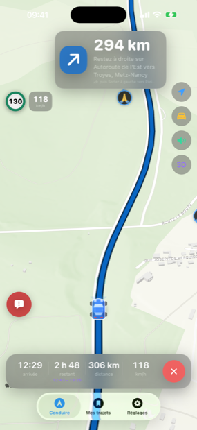
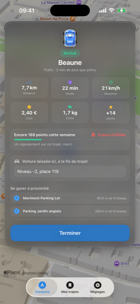

Four routes, and what each one costs
Apple hands back a handful of itineraries for the same trip. WayCar decides which one is the one, and shows you what you give up by taking another — in minutes and in euros, before you set off.
The four choices
| Choice | What decides it | How a near-tie breaks |
|---|---|---|
| Fastest | Duration with live traffic. | Nothing to break: that is the criterion itself. |
| Shortest | Kilometres driven. | Within 2 % on distance, the quicker one wins. A route 40 m shorter and eleven minutes slower is not “the shortest”, it is a mistake. |
| Cheapest | Energy + tolls + vignettes. | Within 20 cents, the quicker one wins. Twenty cents is not worth half an hour. |
| Calmest | Manoeuvres per kilometre. | Within 0.15 manoeuvres/km, the quicker one wins. |
Under the chosen route, one line says why it won: “12 min less than the alternative”, “about €6.40 saved”, “0.8 manoeuvres/km instead of 2.1”. When the gap is too small to deserve a sentence, no sentence is written.
Calmest, and why it exists
This is the concrete answer to the most common complaint about this kind of app: being sent down residential side streets, past a school, to shave ninety seconds. The criterion is manoeuvres per kilometre. A motorway run is well under 1; a route threaded through housing estates is several. The figure is shown, so you can compare it yourself.
What “cheapest” actually costs out
A route’s cost is the sum of three things, and each is worked out separately because they do not obey the same rules.
1. Energy
Your vehicle’s consumption, adjusted for the urban share of the trip, multiplied by the distance and by the price you entered for a litre or a kWh. The adjustment does not have the same sign for both drivetrains: a combustion engine suffers from stop-and-go and drinks more in town, while an electric car recovers energy braking and uses less. Both corrections are applied, each in its own direction.
2. Tolls, country by country
Europe charges for its motorways in three different ways and the difference is real money. An earlier version of the app applied one average French rate to every country: on a Munich to Milan run — German motorway free, Austrian vignette, Brenner toll, Italian autostrada — the estimate came out roughly a third under, and never mentioned that the driver is legally required to buy something before crossing.
Today the route is split into per-country legs and each country is charged under its own regime. The detail is on the Vignettes and tolls page.
3. Vignettes
A vignette is a flat cost with nothing to do with distance, and it is a legal requirement. So it is not folded silently into a total: it is listed by country, with its price, and counted once per country however many times the route dips into it.
How WayCar knows which countries you cross
Apple will not say which countries a route line passes through. So WayCar samples the line — by distance rather than by vertex, because vertices are thick around junctions and sparse on a motorway, and every-nth-vertex would spend all its samples in towns and miss whole countries — then reverse-geocodes each sample for its country code.
When a sample comes back unplaced, WayCar only fills the gap where there is evidence on both sides. A gap at either end of the route is left empty.
That is not fastidiousness. On the Swiss corridor of a Munich–Milan run, Italy is 49 km out of 495: a single sample. Let a trailing gap take its neighbour’s code and those 49 km become Switzerland — a country the driver is not in, carrying a €42 vignette they do not need. Past the last placed sample there is no evidence, and the honest answer to no evidence is silence: those kilometres are attributed to nobody rather than to the wrong country.
What stays an estimate, and says so
Apple says whether a route has tolls, never which kilometres are tolled or what they cost. So WayCar assumes roughly three quarters of the distance driven in a per-kilometre country is on tolled sections, and applies that country’s published average rate. The result is labelled an estimate in the app, and it is one.
Where the route has no tolls at all, a per-kilometre country costs nothing: France has plenty of free trunk roads, and a route that uses them is not charged.
“Avoid tolls” is an instruction, not a preference
When you tick “avoid tolls” or “avoid motorways”, the request is passed to Apple — which is entitled not to honour it. For a long time nothing checked the answer: if the alternates came back mixed, the app picked the quickest, tolls and all, while a toll-free route sat one row below. In France or Italy that quietly costs money.
Now the list is partitioned before it is ranked: no route that honours your instruction can be placed below one that does not. The others stay in the list and stay selectable, with the price of obeying shown next to them.
Arrival time: a window, not a number
Apple’s arrival time describes the traffic right now. WayCar adds what it has learnt from your own trips: for each slot (day of the week, hour), a multiplier between the free-flow duration and the duration you actually took. The model starts from a European baseline — the morning peak around 8, the evening peak around 18, much flatter weekends — and bends towards your habits as you drive. One odd trip cannot swing a slot; fifty will.
What you see is therefore a window with a reason attached: traffic expected to worsen, traffic expected to ease, n reports on the route, or traffic as usual. Confidence starts at 55 % for a slot with no history and rises towards 95 % once it has some.
While you are driving
- The exit number comes first. Apple writes “Take exit 12 towards Lyon”. At 130 km/h the only thing you are hunting for on the sign is the 12 — and it was buried mid-sentence, unstressed, said once. It now goes to the front. When the number cannot be read out of the instruction, WayCar says the original sentence rather than inventing a number.
- Recalculation. The route is refreshed during the trip; the line distinguishes the road already driven, the road ahead, and stretches other drivers report at a standstill.
- The break. After two hours at the wheel, WayCar suggests stopping and shows the services still ahead of you. A fifteen-minute stop resets the clock; a toll barrier or a red light does not. This is advice, not the European drivers’ hours regulation — that governs vehicles over 3.5 tonnes and coaches, not cars, and claiming otherwise would be an invented legal obligation.
- Ferries. A crossing inside the route is spotted and flagged on the route card: it has to be booked, it costs, and it puts part of the journey on a boat.
- On arrival. Car parks within 600 m, three at most. WayCar does not claim to know whether they have space or what they charge: Apple’s places database knows a car park is there, and no more than that.
On screen



The app is shown in French in these captures; it ships in five languages.